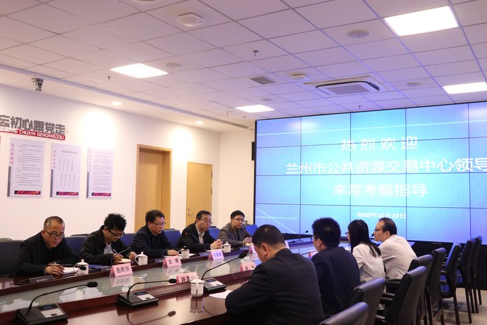

【信息发布时间：2020-10-27阅读次数：】 【我要打印】 【关闭】
10月22日上午，兰州市公共资源交易中心四级调研员关晓峰一行5人，来我市学习考察政府采购全流程电子化等经验做法，公共资源交易中心党支部书记钱颖洁，副主任朱冰等陪同考察。
简单参观公共资源开评标室，并听取我市公共资源交易中心的基本情况以及我市政府采购全流程电子化交易情况后，关晓峰一行就采购交易代理机构管理、国企采购、电子签章、交易系统设置以及公共资源交易档案电子化等情况进行了交流学习。

我市公共资源交易自2015年实施改革以来，坚持“应进必进、统一规范、公开透明、服务高效”的原则，依托一个网站入口，在统一的公共资源管理平台下，从2016年着手建设采购交易电子化交易系统，至2018年，已经常态化实现10多个交易环节的全流程电子化；常态化实现所有采购目录的全品类全覆盖；常态化实现所有政采方式的全面电子化。今年1-9月份，完成全流程电子化采购852宗，交易金额51.07亿元，同比分别增长28.7%和176.5%。